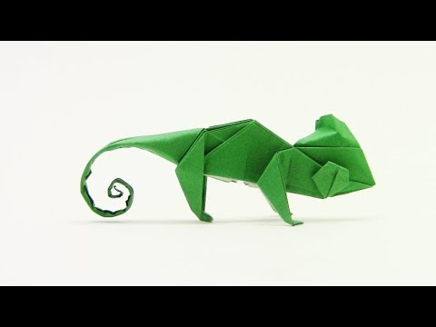

Origami Instructions and Diagrams

Camel
- Camel's ears are furry
- Camel can move easily across the sand because of its specially designed feet
- When they find water, they will drink as much as possible.

Chameleon
- Chameleons are reptiles that are part of iguana suborder
- Changing skin color is an important part of communication amoung chameleons.
- Most chameleons have a prehensible tails thet they use to wrap around tree branches.

Pigeon
- Pigeons are incredibly complex and intelligent birds
- Pigeons are renowned for their outstanding navigational abilities.
- Pigeons have excellent hearing abilities.

Teddy bear
- The Teddy Bears’ Picnic song was originally called The Teddy Bear Two Step
- Winnie the Pooh was based on a real bear
- The smallest commercially available stitched teddy bear is a mere 0.29 inches tall, made by South African “microbear”
maker Cheryl Moss, whose largest creations are just taller than half an inch

Panda
- Giant pandas are good at climbing trees and can also swim
- Pandas go from pink to white and black (or brown)
- Pandas are "lazy" — eating and sleeping make their day
Cicada
- All cicada species in North America came from a common ancestor
- cicada species switches from being on a 13-year cycle to a 17-year cycle